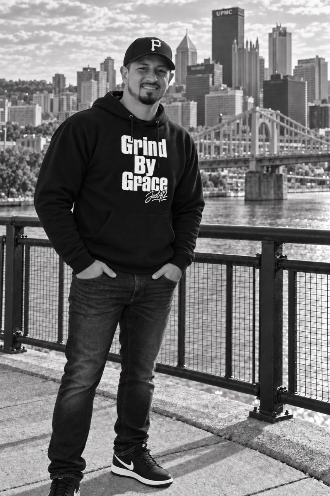

About us / The people behind Just412
A LIFE REBUILT.
BY GOD’S GRACE.
I’m Justin Drish, a Pittsburgh native, husband, and father of three, sharing the story behind Just412.

01 / Meet Justin
HUSBAND.
FATHER.
A LIFE RESTORED.
Just412 grew out of my Pittsburgh roots and the grace of God that changed my life fifteen years ago. I had been using drugs since thirteen, and by twenty-five, heroin addiction had left me estranged from family and friends and living on the streets. Even in the City of Bridges, I had burned them all.
02 / My story
OUT OF ADDICTION.
INTO A NEW CHAPTER.
years ago,
my story took a different turn.
Through a program I entered called Adult & Teen Challenge, God drew my attention to Acts 4:12: “There is salvation in no one else, for there is no other name under heaven given to men by which we must be saved.” After searching everywhere else for meaning, worth, and peace, I committed my life to Jesus and have been serving Him ever since, imperfectly but passionately.
03 / Our family
A FAMILY.
A NEW CHAPTER.
Today, by the grace of God, I’m a husband to Courtney and a father to Hannah, Solomon, and Valentino. After six years pastoring at Reclamation Church in Monroeville, I now serve as Executive Director with Pennsylvania Adult & Teen Challenge and Naaman Network, offering others the same hope I received through the ministry where my life began to change.
More about my professional workThe people behind the purpose
A HUSBAND.
A FATHER
OF THREE.
Only by the grace of God.
04 / Behind the mark
412 IS PITTSBURGH.
IT’S ALSO PERSONAL.
Just412 shares that hope through merchandise and creative work shaped by talent, hustle, and the grace of God. I want it to point people toward Christ and remind them that there is redemption, meaning, and hope, no matter how far they’ve fallen. If that feels hard to believe, take it from me: I’ve been there, and it was there that God met me.
Grind by Grace,
Justin
05 / A place to start
LOOKING FOR HELP
WITH ADDICTION?
If you or someone you love needs help with addiction, visit these organizations to learn more about their programs and how to reach their teams.